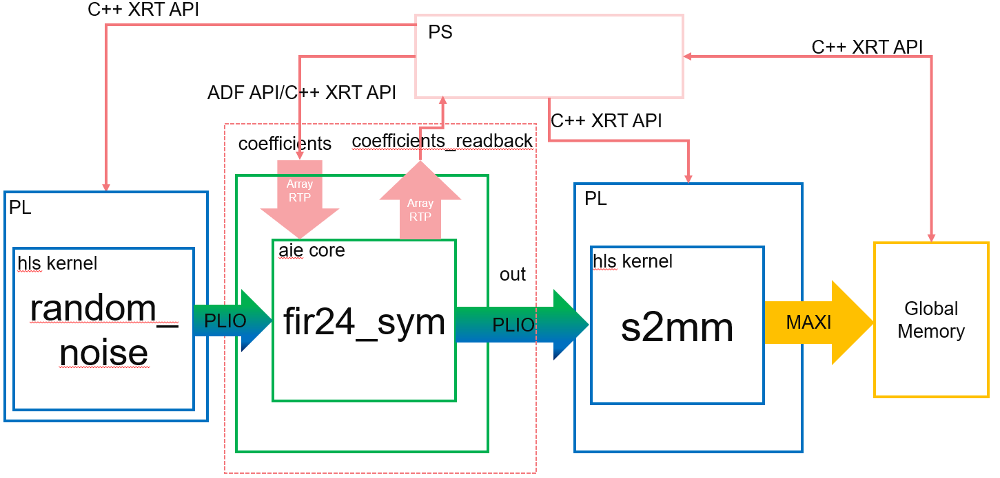

AI Engine DevelopmentSee Vitis™ Development Environment on xilinx.com See Vitis-AI™ Development Environment on xilinx.com |
Asynchronous Array RTP Update and Read for AI Engine Kernel¶
This step demonstrates:
The Array RTP update for AI Engine kernels
Asynchronous read of Array RTP for AI Engine kernels
C++ version of XRT API to control PL kernels
C++ version of XRT API to control graph execution
The example design is similar to Asynchronous Update of Scalar RTP for PL inside a Graph, and Array RTP Update for AI Engine Kernel, except that the AI Engine kernel has an asynchronous output, and the PL kernel inside the graph is pulled out of the graph. The example shows how to perform asynchronous reads of array RTP by the ADF API and the XRT API. The PL kernels and graph execution are controlled by the C++ version of the XRT API. This differs from the previous steps which used the OpenCL API or the C version of the XRT API.
The system to be implemented is as follows:

Note: The default working directory in this step is “step5”, unless explicitly specified otherwise.
Review Graph and RTP Code¶
In the AI Engine kernel code (aie/kernels/hb24.cc), the interface is declared as:
void fir24_sym(input_window_cint16 *iwin, output_window_cint16 *owin, const int32 (&coeffs)[12], int32 (&coeffs_readback)[12]);
For the RTP array input, const is used for the array reference. From the graph, the RTP port can only be input or inout. The inout port in the graph can only be read by the PS program, it cannot be written by the PS program. Therefore, another port coeffs_readback is defined to read back the coefficient.
In the graph definition (aie/graph.h), the RTP declaration and connection are added as follows:
port<direction::in> coefficients;
port<direction::inout> coefficients_readback;
connect< parameter >(coefficients, async(fir24.in[1]));
connect< parameter >(async(fir24.inout[0]),coefficients_readback);
In aie/graph.cpp (for AI Engine simulator), the RTP update and read commands are:
gr.update(gr.coefficients, narrow_filter, 12);
gr.run(16); // start PL kernel & AIE kernel
gr.read(gr.coefficients_readback,coeffs_readback,12);
std::cout<<"Coefficients read back are:";
for(int i=0;i<12;i++)std::cout<<coeffs_readback[i]<<",\t";
std::cout<<coeffs_readback[i]<<",\t";
}
std::cout<<std::endl;
gr.wait(); // wait PL kernel & AIE kernel to complete
gr.read(gr.coefficients_readback,coeffs_readback,12);
std::cout<<"Coefficients read back are:";
for(int i=0;i<12;i++){
std::cout<<coeffs_readback[i]<<",\t";
}
std::cout<<std::endl;
gr.update(gr.coefficients, wide_filter, 12);
gr.run(16); // start PL kernel & AIE kernel
gr.read(gr.coefficients_readback,coeffs_readback,12);
std::cout<<"Coefficients read back are:";
for(int i=0;i<12;i++){
std::cout<<coeffs_readback[i]<<",\t";
}
std::cout<<std::endl;
Because the RTP read is asynchronous, it can not ensure that reads are happening in between kernels running. Only after graph wait() runs (which is a synchronization point), are the coefficients updated and can be read back.
Run AI Engine Compiler and AI Engine Simulator¶
Compile the AI Engine graph (libadf.a) using the AI Engine compiler:
make aie
The corresponding AI Engine compiler command is:
aiecompiler -platform=$PLATFORM_REPO_PATHS/xilinx_vck190_es1_base_202110_1/xilinx_vck190_es1_base_202110_1.xpfm -include="./aie" -include="./data" -include="./aie/kernels" -include="./" --pl-axi-lite=true -workdir=./Work aie/graph.cpp
After the AI Engine graph (libadf.a) has been generated, verify for correctness using the AI Engine simulator:
make aiesim
Run Hardware Cosimulation and Hardware Flow¶
The Makefile rule targets introduced in Synchronous update of Scalar RTP, Asynchronous Update of Scalar RTP and Asynchronous Update of Array RTP still apply here.
Details about tool options and host code in Asynchronous Update of Scalar RTP for PL inside a Graph, and Array RTP Update for AI Engine Kernel are similar. This section only focuses on the different part.
In sw/host.cpp, the C++ version of the XRT API is used to control PL kernels outside of the graph:
// Open xclbin
auto device = xrt::device(0); //device index=0
auto uuid = device.load_xclbin(xclbinFilename);
auto dhdl = xrtDeviceOpenFromXcl(device);
// s2mm & random_noise kernel handle
auto s2mm = xrt::kernel(device, uuid, "s2mm");
auto random_noise = xrt::kernel(device, uuid, "random_noise");
// output memory
auto out_bo = xrt::bo(device, output_size_in_bytes,s2mm.group_id(0));
auto host_out=out_bo.map<std::complex<short>*>();
//kernel run
auto s2mm_run = s2mm(out_bo, nullptr, OUTPUT_SIZE);//1st run for s2mm has started
auto random_noise_run = random_noise(nullptr, OUTPUT_SIZE);
... //About graph control
// wait for s2mm done
auto state = s2mm_run.wait();
std::cout << "s2mm completed with status(" << state << ")\n";
out_bo.sync(XCL_BO_SYNC_BO_FROM_DEVICE);
... //Post-processing
The adf API to control graph execution is similar to that used in the previous step. In this step, the C++ verion of XRT API to control graph execution is introduced. They can be switched by a user-defined macro __USE_ADF_API__. The C++ XRT API to update and read the array RTP is as follows:
int narrow_filter[12] = {180, 89, -80, -391, -720, -834, -478, 505, 2063, 3896, 5535, 6504};
int wide_filter[12] = {-21, -249, 319, -78, -511, 977, -610, -844, 2574, -2754, -1066, 18539};
std::cout<<"size of cofficient read back:"<<sizeof(coeffs_readback)<<std::endl;
std::cout<<"size of filter"<<sizeof(narrow_filter)<<std::endl;
auto ghdl=xrt::graph(device,uuid,"gr");
ghdl.update("gr.fir24.in[1]",narrow_filter);
ghdl.run(16);
ghdl.read("gr.fir24.inout[0]", coeffs_readback);//Async read
std::cout<<"Coefficients read back are:";
for(int i=0;i<12;i++){
std::cout<<coeffs_readback[i]<<",\t";
}
std::cout<<std::endl;
ghdl.wait();
std::cout<<"Graph wait done"<<std::endl;
ghdl.read("gr.fir24.inout[0]",coeffs_readback);//read after gr.wait, gr.update has been taken effective
std::cout<<"Coefficients read back are:";
for(int i=0;i<12;i++){
std::cout<<coeffs_readback[i]<<",\t";
}
std::cout<<std::endl;
//second run
ghdl.update("gr.fir24.in[1]",wide_filter);
ghdl.run(16);
ghdl.read("gr.fir24.inout[0]", coeffs_readback);//Async read
std::cout<<"Coefficients read back are:";
for(int i=0;i<12;i++){
std::cout<<coeffs_readback[i]<<",\t";
}
std::cout<<std::endl;
Run the following make command to build the host exectuable file.
make host
Notice the following linker script links libraries adf_api_xrt, and xrt_coreutil, which are necessary for the adf API to work together with the XRT API.
${CXX} -o ../host.exe aie_control_xrt.o host.o -ladf_api_xrt -lgcc -lc -lxilinxopencl -lxrt_coreutil -lpthread -lrt -ldl -lcrypt -lstdc++ -L${SDKTARGETSYSROOT}/usr/lib/ --sysroot=${SDKTARGETSYSROOT} -L$(XILINX_VITIS)/aietools/lib/aarch64.o
Run the following make command to build all necessary files and launch HW cosimulation:
make run_hw_emu
In the Linux prompt, run following commands:
mount /dev/mmcblk0p1 /mnt
cd /mnt
export XILINX_XRT=/usr
export XCL_EMULATION_MODE=hw_emu
./host.exe a.xclbin
To exit QEMU press Ctrl+A, x
For hw mode, run following make command to generate an SD card package:
make package TARGET=hw
In hardware, after booting Linux from the SD card, run following commands in the Linux prompt:
export XILINX_XRT=/usr
cd /mnt/sd-mmcblk0p1
./host.exe a.xclbin
The host code is self-checking. It will check the output data against the golden data. If the output matches the golden data, after the run is complete, it will print a message similar to:
Coefficients read back are:180, 89, -80, -391, -720, -834, -478, 505, 2063, 3896, 5535, 6504,
Graph wait done
Coefficients read back are:180, 89, -80, -391, -720, -834, -478, 505, 2063, 3896, 5535, 6504,
Update fir24 done
Coefficients read back are:-21, -249, 319, -78, -511, 977, -610, -844, 2574, -2754, -1066, 18539,
s2mm completed with status(4)
TEST PASSED
Conclusion¶
In this tutorial you learned about:
The concepts of synchronous and asynchronous scalar RTP
Asynchronous array RTP
Asynchronous array RTP read
Launching AI Engine simulator, HW cosimulation, and HW
XD001 | © Copyright 2021 Xilinx, Inc.